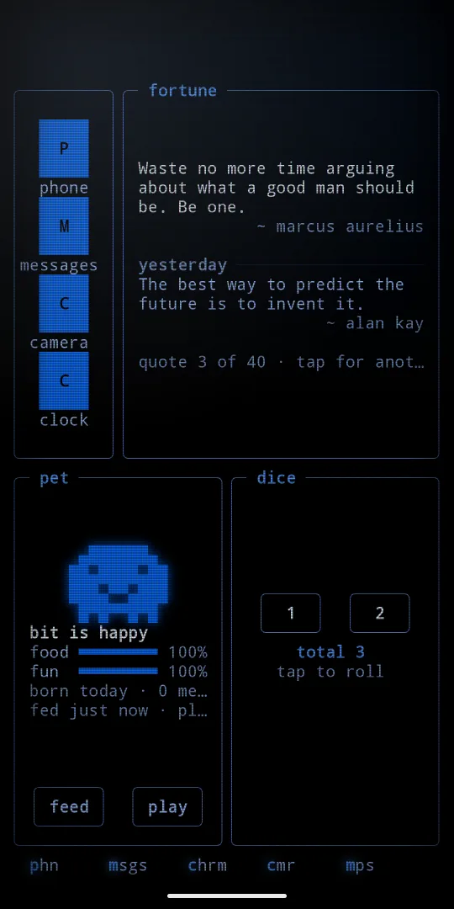
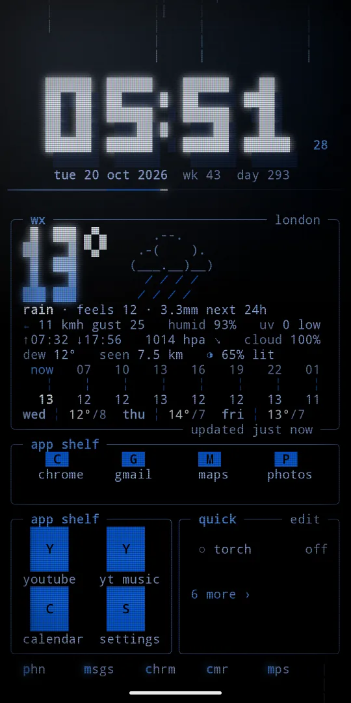
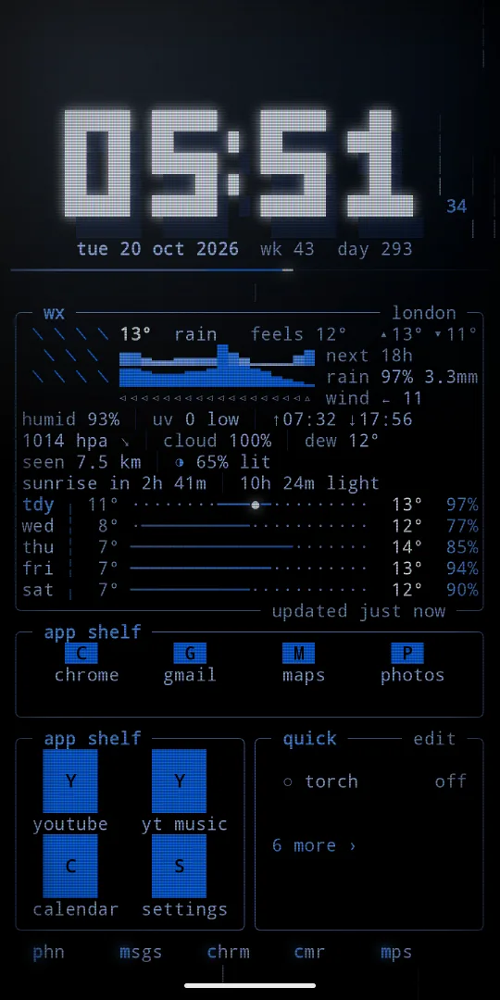
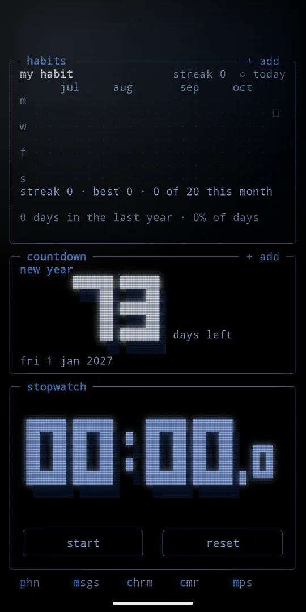
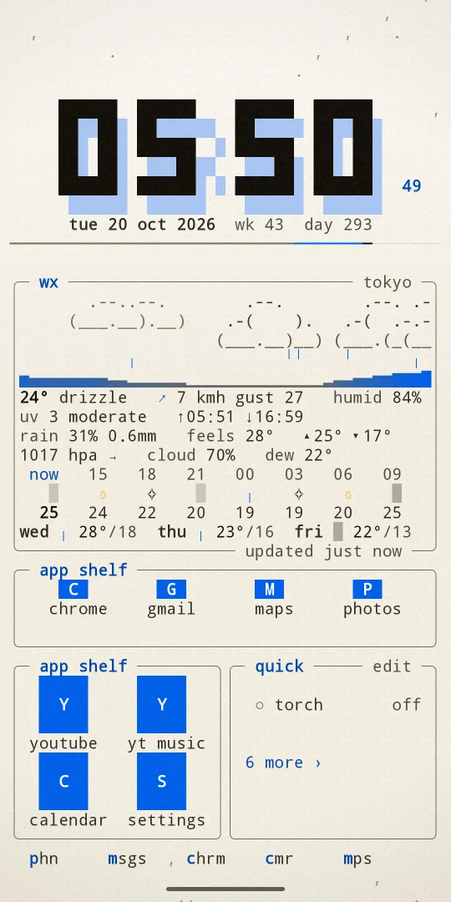
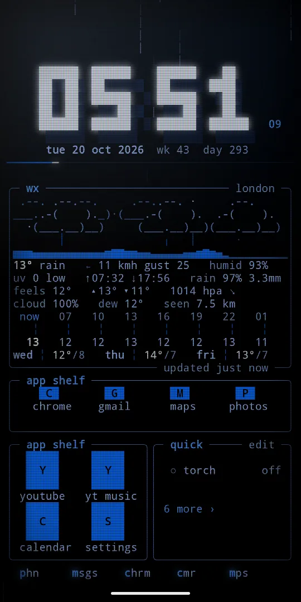
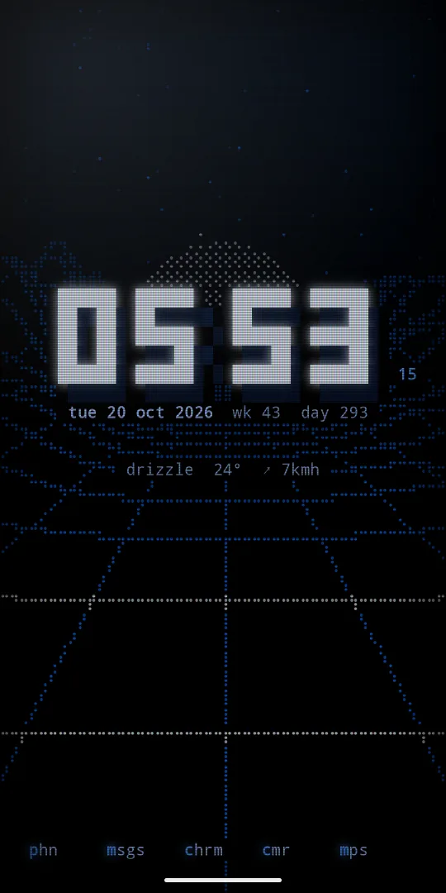
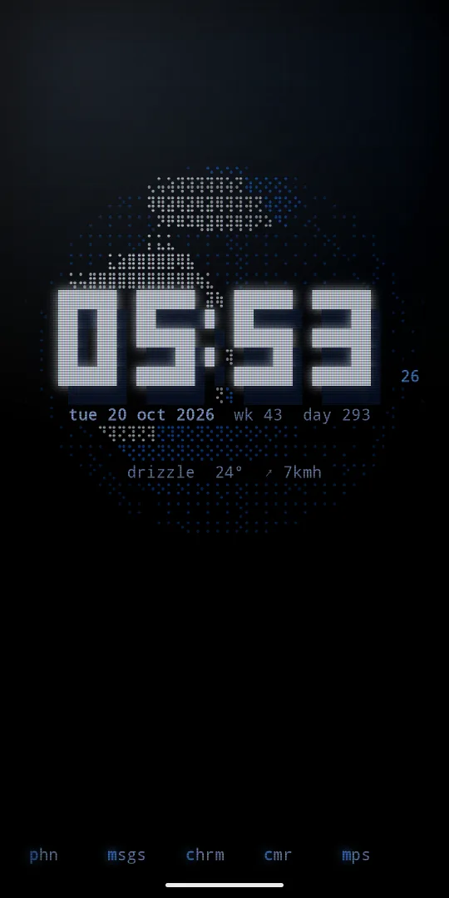
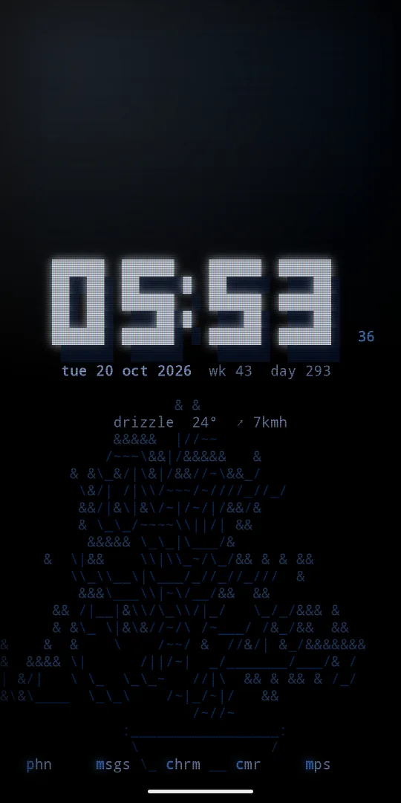

The guide
Everything Phosphor does, from install to the last setting, in order. Words in code are what you see in the app.
01 install
Get Phosphor on Google Play. You pay once. There are no ads, no subscription and no account. Phosphor runs on Android 7 or newer, on phones and tablets, in portrait and landscape.
02 first start and setup
The first start opens the setup guide. It has six steps, and each step has a button that opens the right system screen. A step ticks itself once it is done.
home screen: make Phosphor your home screen, so the home button always brings you here.lock screen: use the Phosphor wallpaper on the lock screen. When Android asks, pick "Lock screen" or "Home and lock screen".notifications: allow notification access for the log, the preview and media controls. Nothing leaves your phone.system lock cards: Android draws its own cards and clock over the lock screen. Set lock screen notifications to "Don't show any notifications" and turn off "Dynamic clock".weather, calendar: allow location for local weather, or type a city instead. Allow the calendar for your events.battery: tips to save power. See battery.
A small ◇ setup n/6 hint stays in the top bar until the first three are done. Open the guide again any time from settings, help, setup guide, or type :setup in search.
03 set as home screen
The easiest way is the first step of the setup guide: tap set as home and pick Phosphor. You can also do it in Android settings. On most phones it is under Apps, then Default apps, then Home app.
To go back to your old launcher, pick it in the same place. Phosphor keeps your pages and settings.
04 the tour and the cheat sheet
The tour has 13 steps. Each step is one gesture, tried on your real home: a ghost finger shows it, then you do it. The card has ‹ back, skip › and end. TalkBack reads each step.
When the tour ends you can keep what you changed or undo the tour, which puts your pages and panels back.
The gestures cheat sheet lists every gesture in groups: move around, edit the home, apps and notifications, panels and type. Tap a row to try it on your own home.
Ways in: the last row of the setup guide, settings under help, or type :tour or :gestures in search.
05 gestures
- swipe sideways
- next or previous page
- swipe up
- apps and search
- swipe down
- notification shade
- tap the path up top
- the
gomenu: every page, all apps, search, notifications - home button
- first page
- hold empty space
- edit mode
- tap ◆ phosphor
- settings
- tap a shortcut
- open the app
- hold a shortcut
- pin, hide, app info
- tap a notification
- open it
- hold a notification
- read it all
- swipe a notification left
- dismiss it
- tap a quick action
- toggle it
- hold a quick action
- pick your quick actions
- tap the weather
- next place
- drag a border
- resize panels
- double tap a border
- side by side, or stacked again
- hold a panel, drag
- move, swap or split
When the top bar is hidden, "tap the path" becomes "hold, then go" and "tap ◆ phosphor" becomes "hold, then settings". Nothing needs a swipe: every swipe has a tap way too.
06 what is on the screen
The top bar
A path like ~/dashboard says which page you are on. Tap it for the go menu. Tap ◆ phosphor for settings. On a fresh install the top bar and the phone's status bar are hidden, like in the store pictures. Show them under settings, home, top bar and status bar. With the status bar hidden, a swipe down from the top edge shows it for a moment.
The panels
- clock: square pixel digits. When a digit changes it glitches, then crumbles into falling dots. Tap it for alarms.
- weather: the real weather in one of three styles: live sky, big numbers or waybar. See weather styles. Bigger panels add hours, rain, UV and more.
- forecast: the days ahead.
- notifications and inbox: your notifications, newest first. The inbox has notifications and events as tabs.
- agenda and month: what is coming up, and the month with today lit and busy days marked. Tap to open your calendar.
- quick actions: torch, wifi, sound and more.
- apps: your favourite apps as a list.
- app shelf: app icons you pick, one per cell, as a row or a block. See the app shelf.
- notes: a note pad, saved as you type.
- briefing: your day as a short report.
- now playing, player and radio: what plays, with controls. See music.
- monitor: cpu, memory, disk and network.
- Every tool is a panel too: network, habits, countdown, stopwatch, progress, binary, fortune, pet, dice, cmatrix and the rest. See tool pages and panels.
Panels show more when they are bigger and drop the least useful parts when they are smaller.
The app shelf
The app shelf is in the phone group of the picker. It holds one app per cell, at any size: 1x1 is one app, a 4x1 is a row of four, a 1x4 is a column, and 4x2 or bigger is a grid. It opens as a 4x1 row. Each shelf keeps its own apps, up to eight shelves in all.
- Add an app: tap a
+on the shelf and pick fromadd to the shelf. - Open an app: tap its cell.
- Change the shelf: hold an app and let go. The panel menu starts with
open,change app ›,move left,move rightandremove from shelf, thenapps on the shelf ›andlabels. - Size:
sizein the same menu, or the◢corner in edit mode. - Labels: auto, on or off. Auto shows names when there is room. The same row is in settings,
home,app shelf labels.
Each icon is a block with the app's first letter, lit in your theme. TalkBack reads "app shelf, 4 apps" and each app by name, and apps on the shelf lets you reorder by taps.

The shortcut row
At the bottom sits one row of up to five shortcuts: your pins first, then the apps you open most. Names are made short, like msgs for Messages, with the first letter lit.
07 pages
Add up to ten pages and swipe between them. The default pages are dashboard, inbox and monitor. Each page is one of three things:
- a preset layout: dashboard (a bit of everything), inbox (notifications first), weather (big sky and forecast), agenda (month and events), media (now playing), radio (internet radio by cliamp), apps, monitor (system gauges), today (your day as a briefing), notes (clock and a note pad) and zen (just the clock).
- a tool: todo, pomodoro, alarm, calc, world, sky, battery, storage, fetch, meeting, network, habits, countdown, stopwatch, progress, binary, fortune, pet, dice or matrix. See tool pages and panels.
- a page you build: start empty and place panels like Android widgets.
Manage pages
Hold empty space, then tap pages. Under this page you can add a panel, open edit mode, pick a layout to start from, move the page with ‹ n of m ›, or remove it. Under all pages, add a page starts an empty page and opens the picker.
08 edit mode
Hold empty space, or a panel spot that has no hold of its own. The top bar turns into a strip:
- + add
- open the picker to add a panel
- pages
- add, move and remove pages
- go
- jump to another page
- look
- theme, wallpaper, live weather, glass, day and night, text size, crt glass
- settings
- every setting
- lock layout
- panels stay put
- done
- leave edit mode
Free cells show a blueprint: a dashed grid with a + and the size of the free space. Each panel gets a frame with its size, a ✕ to remove it and a ◢ corner to resize it.
Back, home, done or opening the app list leave edit mode. Every change is already saved.
The page is a grid of cells: 4 columns on a phone, 6 on a small tablet or a phone in landscape, 8 on a big tablet. Sizes read like Android widgets: 4x2 means 4 columns by 2 rows. Landscape and tablets keep their own placement.
09 add a panel
- In edit mode tap
+ add, or tap a free+spot to aim at it. - The picker shows cards in groups: time and weather, phone, media, system and tools. Each card has a live preview, its size and one line about it. Type to search.
- Tap a card. It goes into the spot you aimed at, or to the best free spot. The strip then offers
put it here,more waysandcancel. - Or hold a card and drag it onto the page. A lit outline shows where it lands.
A new panel opens at its own size and never takes more than half the screen. A panel that is already on the page says on this page.
10 move, resize and remove
In edit mode:
- Tap a panel for its menu:
what it shows, the panel's own rows,size ›(wider, narrower, taller, shorter),move ›,replace with ›,move to page ›,add a panel,lock layout,removeanddone. - Hold and drag a panel to move it. Drop it on another panel to swap them, or near an edge to split that space.
- Drag the ◢ corner to resize. It grows only into free cells.
- Tap ✕ to remove a panel. The strip offers undo for 6 seconds.
Outside edit mode, hold a panel and let go for the same menu. Tool panels add their own rows to it.
While you drag, a line at the top or bottom says what will happen: MOVE, ADD, SWAP, SPLIT, RESIZE, or NO ROOM when it does not fit.
11 preset pages and borders
Preset layouts like dashboard and inbox are tiled: panels share borders. You can change them without edit mode:
- Drag a border between two panels to make one taller and the other shorter.
- Double tap a border to put two panels side by side, or stack them again.
- Hold a panel's top edge and drag it onto another panel to swap them.
On a wide screen, drag the gap between the two columns, or double tap it to mirror them. Hold empty space, then pages, then panels lists every border with the same actions, plus reset splits.
Edit mode works on presets too. The first real change saves the page as your own, with the same name.
12 apps, search and commands
Swipe up, or use all apps and search in the go menu.
- Type to find any app, even with typos. Matches light up letter by letter.
- Enter opens the top match, or searches the web.
keyboard first(settings,home) brings up the keyboard as soon as you swipe up.open the only matchopens the app by itself once your typing leaves just one.- Hold an app to
pin to the top,hide from the list, openapp infooruninstall. - Apps are listed most opened first. Switch to a to z under settings,
home,app order. In a to z, drag the letter rail to jump.
Commands
Type a colon first, then a command. Without the colon, a matching app wins.
- :settings
- open settings
- :edit
- edit mode
- :add
- add a panel to this page
- :pages
- add, move or remove pages
- :layout zen
- turn this page into a layout
- :theme amber
- use a theme (
:themealone picks the next one) - :wallpaper
- next wallpaper (
:ambienceworks too) - :quick
- pick quick actions
- :lock
- lock screen settings
- :link
- pair devices and sync the theme
- :setup
- the setup guide
- :tour, :gestures
- the tour and the cheat sheet
- :boot
- replay the boot
13 notifications
Notifications need notification access (setup step 3). New ones type themselves in.
- Tap a notification to open it.
- Swipe left to dismiss it. A strip fills in from the right; let go once it says
✕ let go. On a grouped card it clears all of that app's notifications. One that cannot be cleared saysstays. - Hold it for a preview with the full text and
[ open ],[ dismiss ]and[ close ]. The preview never marks it read or removes it unless you tap dismiss. - When they do not all fit, each app gets one line with a count like
×3. - A bigger panel adds a summary, like "7 from 3 apps", and arrivals per hour.
14 quick actions
Quick actions show up to seven actions you pick from nineteen: torch, wifi, bluetooth, sound, do not disturb, location, battery saver, airplane, mobile data, nfc, hotspot, volume, brightness, rotation, cast, camera, timer, calculator and screen.
Torch, sound and do not disturb switch in place. Others open the right system page and show their live state. A taller panel adds sliders for media, screen, ring and alarm volume, each with − and +.
Pick your actions under settings, home, quick actions, or hold a quick action.
15 weather and places
Weather comes from Open Meteo. There is no account and no key. It is fetched at most every 30 minutes.
Under settings, clock and weather, weather places:
add a city: type a name. With only cities set, no location permission is needed.add my location: use the phone's location.- Tap a place in the list to remove it.
calendar app picks which app opens your events and days, so Android stops asking each time. ask each time leaves it to Android.
Weather styles
Hold the weather panel and let go. Its menu has style and weather places. Tap style, or its ‹ ›, to step through:
- live sky
- the sky in moving glyphs: stars, the sun or the moon in its phase, drifting clouds, fog, rain, snow and lightning, over a line of the next hours
- big numbers
- the temperature in big block digits, a weather picture beside it, and a summary like "rain · feels 11 · 4 mm next 24h"
- waybar
- a waybar style header, then the next hours as three lines: temperature, rain and wind
The style is the same for every weather panel. Live sky is the only one that moves. So big numbers and waybar cost less battery.


With several places, tap the weather panel to step to the next one. The lock screen and the sky tool follow the place you show. Also here: clock 12h or 24h, and units °c or °f.
16 music and radio
- now playing: title, artist, a seek bar and play controls. It appears only while something plays, and needs notification access.
- player: big controls, the spectrum, album art and the queue when the player shares one.
- radio: internet radio stations from cliamp. Radio by cliamp, radio.cliamp.stream. Nothing connects until you press play. Next and previous switch station.
More than one player? The app name sits on the top edge of the media box. Swipe it sideways to switch players, tap it to open that app, or hold it for the list of players. Phosphor stays on the app you last started, even between songs.
Real visualizer (settings, home) make the bars follow the loudness of the music. Android asks for the microphone for this, because that is the permission that reads the sound mix. Nothing is recorded, kept or sent. Off until you turn it on.
17 tool pages and panels
Any page can be a tool: hold empty space, pages, layout, or type :layout habits. Then the tool fills the whole page and fits any text size. Every tool is also a panel in the picker, so you can put several on one page. Hold a tool panel and let go for its own rows, after what it shows.
- todo
- a todo list to add, tick and clear
- pomodoro
- a focus timer with breaks and rounds. A focus round counts down 5 4 3 2 1 with a soft buzz first. Tap during the count to call it off. It buzzes when a phase ends, even with the screen off.
- calc
- a calculator with big keys and exact maths
- world
- the time in other cities
- sky
- sunrise, sunset and the moon
- battery
- level, heat, power and the last day
- storage
- disk usage as a map
- fetch
- system info like fastfetch
- meeting
- your next meeting and when it starts: "in 25 min", "now" while it runs, or "tomorrow 9:00". Tap it to open the event.
- alarm
- your next alarm, sleep cycles and quick alarms
Ten new panels
- network
- download and upload speed, a trace, the busiest second and totals since boot. In the system group. Tap for wifi.
- habits
- a habit grid you tap to mark a day. Tap the name line to mark today, hold it to rename. Up to 4 habits. Rows:
add a habit,week starts. - countdown
- days left to a date you pick, like "trip 24 12 2026", with a gauge of the wait. Row:
add a date. - stopwatch
- a stopwatch with laps. It runs on with the app closed. Rows:
tenths,reset. - progress
- how far through the day, week, month and year, as gauges. Row:
week starts. - binary
- the time as a binary clock. Rows:
style(bcd or binary),seconds. - fortune
- a quote of the day, said by a cow. Tap for the next one. Rows:
cow,next quote. No network. - pet
- a pixel pet you feed and play with. It sleeps from 22 to 7 and never dies. Hold it to rename.
- dice
- roll dice or flip a coin. Row:
roll: a coin, one to five dice or a d20. - matrix
- cmatrix, falling code. Tap to pause. Rows:
speed,glyphs(kana, binary, hex),rain.
In the picker, countdown, progress and binary are in the time and weather group, network in system, and the rest in tools.


18 themes, day and night and live weather
Open look in edit mode, or the look group in settings.
Themes
Dark themes glow like an old monitor: phosphor (black and #0068ff), amber, matrix, ice, crimson, violet, cyan, sakura, toxic and navy.
Light themes print instead: paper, chalk, riso and forest. They use crisp ink, a second ink offset under the clock like a riso print, and paper grain in place of scanlines.
The rest of look
- theme
- ‹ › steps through all fourteen
- wallpaper
- ‹ › steps through the backgrounds. See backgrounds.
- live weather
- real rain, snow, fog and thunder over the background. See live weather.
- glass ›
opacity: under 100, your phone wallpaper shows through.glass tint: how strongly the panels fill then.- day and night ›
- a day theme and a night theme, by the sun or by the clock. See day and night.
- text size
- small, medium or large
- crt glass
- scanlines, a curved tube edge and a reflection
- showcase setup
- the look from the store pictures
Day and night
The theme can change by itself: one theme by day, another by night. Open look, day and night ›:
- switch
- off,
by the sunor22 to 7. By the sun turns at sunrise and sunset. 22 to 7 is by the clock: night from 22 to 7. - day theme
- the theme by day.
same as themekeeps your main theme. - night theme
- the theme by night, the same way
By the sun uses sunrise and sunset where the weather is, worked out on the phone. Before the weather has a place, day is 7 to 19. Turn the switch on with no side picked, and the day side starts on paper, so you see the change.
The theme row in look changes the side on show, when that side has its own theme. The lock screen and the screen saver follow too. Day and night takes the place of the old night mode: if you had night mode on, it becomes 22 to 7 with ice at night.


Live weather
Turn on live weather in look, and the real weather falls over your background: rain, drizzle, heavy rain, snow, fog and thunder. It follows the place the weather panel shows. A clear or cloudy sky adds nothing. It falls through the empty cells, so text and panels stay clean. It shows on the home screen; the lock screen keeps its own sky row.
Rain costs about the same as the rain background. Under a clear sky it costs nothing.
The font is your phone's own monospace font. Nothing is bundled.
19 backgrounds and frame rate
The background (an ambience) moves through the empty cells behind your panels. Step through them with look, wallpaper, or type :wallpaper:
off, rain, stars, embers, snow, aurora, fireflies, warp, tide, constellations, lava, circuit, meteors, storm, and ten new ones: fire, plasma, life, pipes, terrain, aquarium, blossom, scope, globe and bonsai. Last comes cycle, which runs through them all.
Only empty cells are painted, so text and panels stay clean. Fire, life, pipes and bonsai grow step by step, and look the same at 30 and 60 frames a second.



Under settings, motion and battery:
- frame rate
- 30, 60 (the default) or max. It sets everything that moves on its own. Touch and scrolling always run at the screen's full rate.
- animations
- off stills the motion
- touch ripples
- a ripple where you touch
Small things you will notice: the screen turns on like an old tube, a sheen runs along every bar, a ripple runs through the grid where you touch, and sparks fly when an app opens.
20 lock screen
Android does not let an app replace the lock screen, but it does show your wallpaper behind it. Phosphor comes with a live wallpaper that draws the lock screen in the same grid, theme, glow and glass as home: a block clock, the date, weather, battery, your next event, how many notifications wait, and a blinking prompt.
Open settings, phone, lock screen:
- set as lock screen
- applies the wallpaper
- theme
- match home, or any theme. Match home follows day and night.
- motion
- off draws one still frame a minute
- sky
- weather (the real sky), rain, snow, stars or off
- clock, weather, battery, next event
- turn each pane on or off
- notifications
- off, names (app names and counts, the default) or full text
- hide system cards
- opens Android's own lock screen page
The lock screen can be seen by anyone holding your phone. By default it shows app names, times and counts, not message text.
21 settings map
Tap ◆ phosphor, or hold empty space and tap settings. search settings is the first row: type part of a name to find any setting.
- this page
- add a panel, edit home screen, pages
- look
- theme, wallpaper, live weather, glass, day and night, text size, crt glass, showcase setup
- motion and battery
- frame rate, animations, touch ripples
- home
- top bar, status bar, lock layout, app dock, app shelf labels, app order, open the only match, quick actions, real visualizer, keyboard first
- clock and weather
- clock, units, weather places, calendar app
- feel
- haptics (off, soft, normal, strong), scroll ticks, try every effect
- phone
- lock screen, screen saver, link devices
- help
- tour, gestures, setup guide, reset to defaults, the version, replay boot
The weather style is in the weather panel's own menu, not in settings.
22 link devices
link devices syncs your theme with Hyprtile or another Phosphor on the same wifi, and with an Omarchy computer through the Phone Sync plugin. Turn link on, pick the other device, and check that both screens show the same six digit code.
It stays on your own network. Only theme names and colours go to devices you paired. It is off by default. More on the Phone Sync page.
23 battery
Home draws only when something changes, or while a background, live weather or an effect moves. Nothing runs in the background: no services and no timers, apart from the pomodoro alarm and the radio while it plays. The lock screen stops drawing when the screen is off.
To save more:
- Set
frame rateto 30. - Set
wallpaperto off. Terrain is the heaviest background. - Pick the big numbers or waybar weather style: they do not move.
- Live weather in rain costs about the same as the rain background. Turn it off to save that.
- Turn
motionoff for the lock screen. - Pick a dark theme on an OLED phone.
Battery saver brings motion to 30 frames a second and holds the weather sky still, unless you picked a frame rate yourself. Android's "remove animations" holds everything still.
24 accessibility
- Everything you touch has a target of at least 48dp.
- Text is lifted to a 7:1 contrast on its background in every theme. The big clock follows the 3:1 rule for large text.
- TalkBack reads every button, row and panel, and the tour announces each step.
- The system font size is honoured up to 200%. With large text, each page becomes one full size panel.
- No action needs a swipe: tap the path for the
gomenu, and sliders have−and+. - Blinking stays under 3 flashes a second. Android's "remove animations" stops motion.
25 privacy and permissions
No account, no ads, no analytics. Your notifications, calendar and apps never leave the phone. All permissions are optional:
- location
- local weather. Optional: type a city instead.
- calendar
- the agenda, month and meeting panels
- notification access
- the log and the media panel
- microphone
- only for the real visualizer, off until you turn it on
Day and night works out sunrise and sunset on the phone, from the place the weather already uses. The only network calls are the weather request, one lookup when you type a city, and the radio stream while a station plays. Read the full privacy policy.
26 showcase and reset
showcase setup (in look) swaps in the look from the store: the phosphor theme, the aurora, and a home page of widgets.
reset to defaults (in help) puts look, pages and panels back to a fresh install. Notes, weather places, pinned apps and linked devices stay.
Both save your settings first. Open the same menu again and tap bring back the saved copy to undo.